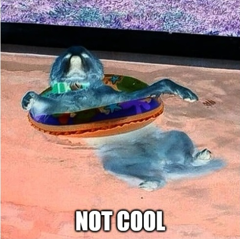

In brazilian portuguese, or simply portuguese, there is the expression "(eu tô) de boa na lagoa". Sometimes, while trying to express myself in english, I felt the need to use this particular expression. As far as I know, there is no english equivalent which preserves the rhymes, so I decided to create this webpage which contains my personal english translation of "de boa na lagoa" and a bunch of memes in a attempt to popularize this expression among my english fluents friends.
In this page you will find:
According to Dicionário Informal, a portuguese analogue of the Urban Dictionary, "de boa na lagoa" intends to express well-being and relaxation. One could say "Today I'm cool in the pool! (Today I'm feeling fucking great!)".
A few fun facts follows. The de boa na lagoa may also refer to:
The expression de boa na lagoa has a rhyme. For this reason alone, the chosen translation is Cool. In the Pool!. And is considered cool (awesome, amazing, nice) to be inside the pool, right?
Here is a dog which is clearly cool in the pool.
And here is the base image with inverted colors as to express something is not right. 
Hint: to cycle through the templates, just click on the dog-in-the-pool image at the top of the page!
Thanks for reading!